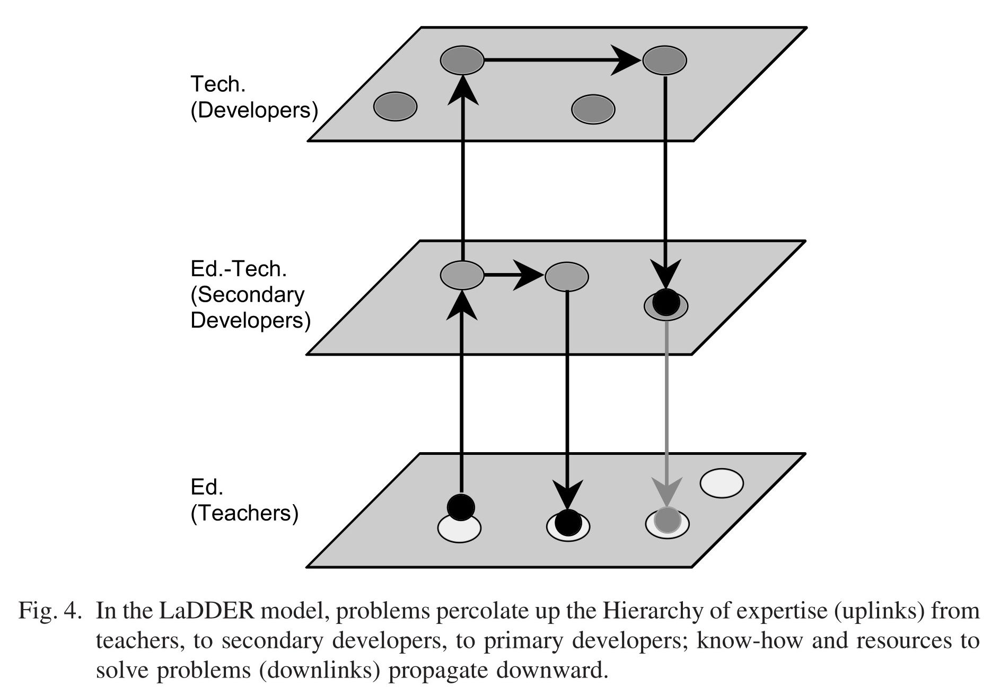

A thematic index to the Boxer literature
This partisan guide is prepared by Antranig Basman, and all editorial remarks are his unless otherwise noted.
It focuses on selected papers, see Flat index for a complete list.
Boxer's Design
A Principled Design for an Integrated Computational Environment
A Principled Design for an Integrated Computational Environment, a core paper (ACM HCI, 1985) motivating many of Boxer's core design choices, particularly its structural (dynamic) scoping model.
Key concepts introduced
Detuning — general structures underly the computational environment that are broadly applicable, less highly tuned to any specific function, and always available for use. Weighs against the surface use of types as seen in all static and many dynamic programming languages.
diffused functionality — Instead of having any one construct serve a particular goal, several constructs can be involved. For example, the use of names for both documentation and reference. Together with detuning, tends towards a system design with structural parsimony, with fewer, more easily learnable primitives.
shallow structuring — anything the novice is likely to need to use or modify must be near the surface of the environment.
Argues for a language/system to be closer to its surrogate model - a simple, mechanical model from which its behaviour can be simulated and predicted. Some compromises with a functional model are necessary.
Warns against the extremes of the hacker bug and formalist bug of providing too many or too few primitives to structure a system, respectively.
Sets out Boxer's naive realism (what the user thinks they see is the computational system itself rather than a multiply-filtered view or one dominated by side effects) and structural metaphor (spatial organisation has a strong semantic content):
Telling examples of Boxer's collapse of function:
In particular, it will become apparent how two-dimensional configurations with containment representing hierarchy can subsume an important core structure to things like program and calling structure, hierarchical data, and file systems.
An interesting projected capability for Boxer, under the heading of time modularity, is the ability to save and restore named versions of any box.
This use of box structure duplicates much of the functionality of one of the most successful aspects of the Smalltalk programming environment, the Browser, allowing leisurely perusal of the system.
A named data box in a library is a variable, data waiting to be referenced. Thus, we have collapsed the two structures of literal reference and variable into one
Describes Boxer's stepper (currently not functioning) as an embodiment of its surrogate model:
However, the advance in Boxer is that the mode of inspection is identical to the concrete mode even beginners use to inspect any part of the system, and the meaning of what one sees is a direct embodiment of the fundamental dynamic surrogate of the system.
Scoping
Section 3.3 on scoping contains the core arguments justifying Boxer's scoping model (named "dynamic"), presenting four telling arguments against the use of traditional, lexical scoping, of which to me (AB) the most telling is
What may be the most important criticism is that lexical scoping simply does not have as simple a surrogate model as dynamic scoping
Conclusion makes it clear that the scoping model is a direct consequence of the copy-and-execute model and that, barring strange contortions, a choice for lexical scoping would imply abandoning copy-and-execute.
LaDDER model

First introduced in a 2001 Berkeley [technical report]((<../papers/Boxer Profile - Component Computing within a Computational Medium (diSessa, 2001).pdf>)), the LaDDER (Layered Distributed Development of Educational Resources) model describes a pyramidal structure for organising communities of participants with different technical competences.
LaDDER was fully elaborated in 2003's Issues in Component Computing: A Synthetic Review? (diSessa et al, 2003).
The core goal of the model is to empower levels of participants with less technological expertise, especially teachers and students, to solve as many of their own problems as possible.
The LaDDER model appears in abbreviated form as Idea Five of Five Powerful Ideas About Technology and Education (diSessa, 2016).
The work described in the technical report's first case study (Number Charts) was written up in two papers by Don Ploger and Steven Hecht ChartWorld (Journal of Research in Childhood Education, 2009) and ChartWorld (Childhood Education, 2012).
The work from the second case study (Image Processing Toolset) was written up by Flavio Azevedo in Personal Excursions (IJCML, 2006) and at an earlier stage in The Case of Scientific Visualization (JSET, Friedman & diSessa 1999).
Supporting Learners as Users
An exchange between Mark Guzdial and Andy diSessa in the pages of 1999's Journal of Computer Documentation.
Supporting Learners as Users (Guzdial, 1999) - Mark's original article, setting out the requirements software supporting learners -
But sometimes, the user's goal is not the same as the explicit task that the software was designed for.
How Should Students Learn (diSessa, 1999) - Andy's response, developing the notion of the "committed learner" and how software for learners should support this model, in addition to other elements of the hierarchy of needs.
Boxer's Scope and Value
")
Notes on the Future of Programming - UCSD Chapter 6 (diSessa, 1986) is a crucial document delineating Boxer's scope and arguing for its value. Here Andy speculates about then-current notions that "computers will disappear into the woodwork as far as ordinary people are concerned" and wonders what they can do for nonspecialists. Argues for the key values of observability that have also been promoted by (Kell, 2012), and underlying Boxer's naive realism:
Long, silent, invisiable algorithms are much less the point that being able simply to arrange to observe and control an ongoing process.
The domain of Boxer explicitly eschews scale:
In contrast to battling huge programs, if we can allow a broad range of simple but useful things to be done transparently, we will have won more than half the battle.
Argues that through continuous incremental advantage, a computational medium could eventually pay its costs, amortised across the trajectory of individual users/learners, and the whole of society.
Some reflections on the tension between direct manipulation and abstraction, and the limitations of both mechanisms.
Indeed, I believe that direct manipulation of symbolic computational structures will become standard, sepcially for nonprofessionals. But [...] I do not believe direct manipulation will soon become even an acceptable substitute for symbolically presenting or representing computational structures.
The perennial problem of "figuring out a programmer's intended level of generalization in pointing to an object".
Boxer Theses
Academic theses that have been written with Boxer as a focus:
Bochser, An Integrated Scheme Programming System - Mike Eisenberg, an MIT Master's Thesis of 1985. Mike retrofits many of Boxer's "naive realism" mechanisms onto a traditional programming language, Scheme, in order to realise as many as possible of the benefits of this materialisation without sacrificing traditional evaluation semantics. Concludes with some highly interesting discussion on the ergonomics of driving language semantics from its visual interface or vice versa — following Alan Kay's 1984 observation that whilst the user interface had come to be the first part of a system for typical user systems, that programming languages had resisted this trend.
The BOCHSER system which is the subject of this report is unfortunately still an instance of the "interface following the language" phenomenon — the point of the system is to take an existing language and supply the most informative and powerful possible interface to it.
Design of a Graphics Subsystem for Boxer - Jeremy Roschelle, an MIT Bachelor's Thesis of 1985.
Boxer, The Programming Language - Leigh Klotz, an MIT Bachelor's Thesis of 1989.
Our central resource both for Boxer's early history (years between 1981 and 1985) as well as a treasure trove of details on Boxer's technical design, and the unique challenges raised by its fully materialised architecture. Details not only of Gregor Kiczales "stack jamming", representing Boxer boxes as Lisp Machine closures, Hal Abelson's implementation sharing tricks, and Leigh's own ingenious strategies for building the Boxer interpreter.
Visualising Number - Declan O'Reilly, a London University PhD thesis of 1995.
Construction of Meanings In and For a Stochastic Domain of Abstraction - David Pratt, a London University PhD thesis of 1998.
Real-Time Programming and the Big Ideas of Computational Literacy - Chris Hancock, an MIT PhD thesis of 2003.
Source of our most well-focused and broad-based critique of Boxer, under four headings on page 29. Polish and appeal, user threshold (the "low threshold, high ceiling" framing of Boxer which is at once a blessing and a curse), real-time problem and parallel universe. Chris takes criticism 3 and runs with it, creating his own fully materialised language, Flogo II, principally the topic of the thesis. Some highly interesting byways take us through connections between temporal logics in programming languages and human grammars, as well as greatly suggestive uses of live variables for refactoring dataflow graphs by young students.